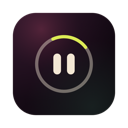

A CLEANING MODE FOR MAC · FREE
Clean your Mac.
Let nothing happen.
CleanPause temporarily freezes the keyboard, media keys,
trackpad, and system gestures while you wipe your Mac.
CLEANING WITHOUT CLEANPAUSE
You were just trying
to clean your keyboard.
CLEANPAUSE · CLEANING MODE
DON'T REACT.
I'm just cleaning you.
Okay. I'm back.
CLEANPAUSE
Everything stops.
You wipe.
Flip it on from the menu bar and every key, tap, and swipe is ignored—on every screen. Scrub as hard as you like. Press and hold the ring for three seconds and your Mac is listening again.

FREE FOR MAC
Three quiet seconds
to come back.
DOWNLOAD FOR MAC
PREVIEW BUILD
Not yet notarized by Apple, so macOS will warn you the first time. On macOS 13–14: right-click the app, then Open. On macOS 15 or later: open it once, let macOS block it, then System Settings → Privacy & Security → Open Anyway. It needs Accessibility permission to pause input, and nothing else.
SHA-256 6d417ba910252f3db2782c8ca68bfea15c04dadd7a82662bd89202d1f66f2feeIf it helped, make something unnecessary
on side court this week.
DROPCLEANPAUSE
by m1nga